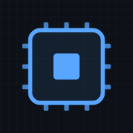

Tizim dizayni · amaliy kurs
Katta tizimlarni pastdan yuqoriga qarab tushunish
Ko'p kurslar darhol «microservice», «sharding», «Kafka» deb boshlaydi. Biz teskari yo'ldan boramiz: avval bitta kompyuter qanday ishlashini, uning chegaralari qayerda ekanini va real tizimda mashinalar qanday rollarni bajarishini chuqur o'rganamiz. Shundan keyingina taqsimlangan tizimlar mantiqiy ko'rinadi — chunki ularning har bir yechimi aynan shu chegaralardan tug'ilgan.

Telefon yoki kompyuterga o'rnatiladi, brauzer paneli ko'rinmaydi va internetsiz ham o'qiladi — barcha darslar qurilmaga saqlanadi.
Kurs qanday kengayadi
Bu sahifa assets/lessons.json faylini o'qib chiziladi. Yangi dars qo'shish uchun
shu faylga bitta yozuv qo'shiladi va X.Y-nomi.html fayli yaratiladi —
index.html kodiga tegish shart emas. Yangi asosiy mavzu (masalan 2)
avtomatik ravishda alohida guruh bo'lib paydo bo'ladi.
{
"asosiyId": 2,
"asosiyNomi": "Tarmoq va protokollar",
"asosiyTavsif": "Mashinalar bir-biri bilan qanday gaplashadi.",
"ichkiId": "2.1",
"ichkiNomi": "TCP nima uchun shunday ishlaydi",
"ichkiTavsif": "Qo'l siqish, oyna, qayta uzatish va ular kechikishga ta'siri.",
"fayl": "2.1-tcp-asoslari.html",
"tartib": 1,
"davomiyligi": "25 daqiqa"
}